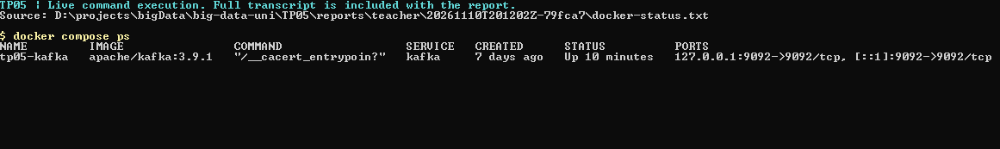
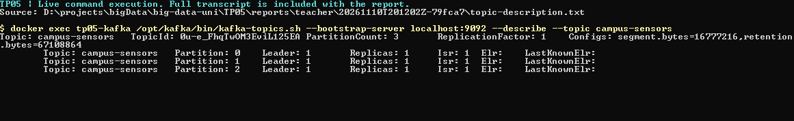
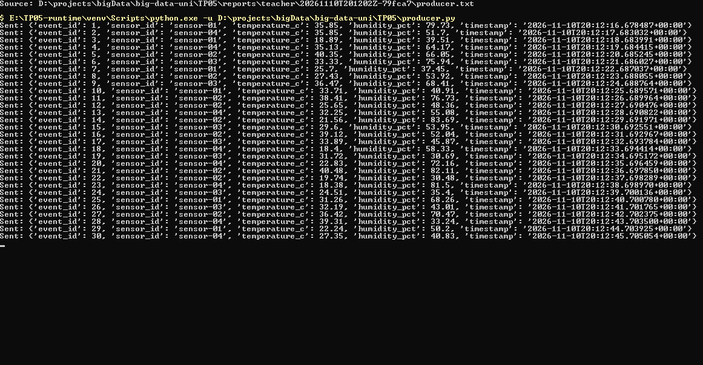
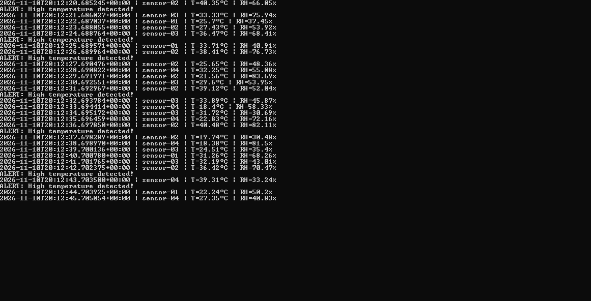
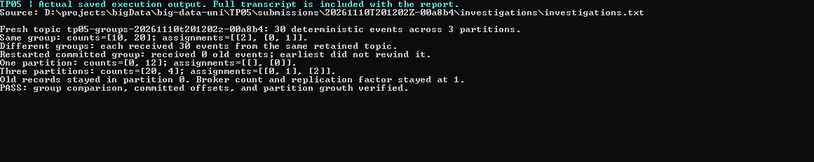
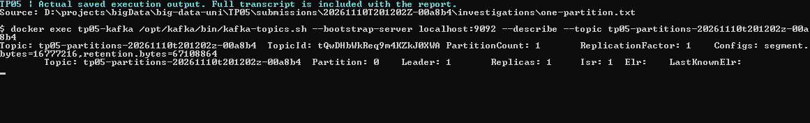
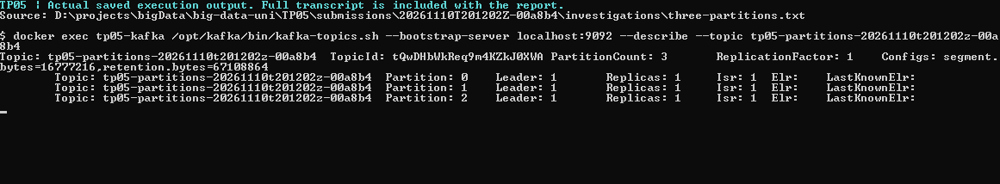

TP05: real-time data streaming using Apache Kafka
Run: 20261110T201202Z-00a8b4. Status: PASS.
Scope and environment
A single Apache Kafka 3.9.1 broker runs in KRaft mode through Docker Compose. Python 3.11 and the teacher's kafka-python==2.0.2 client run synthetic campus sensor producers and consumers. The main topic has three partitions and replication factor 1. No ZooKeeper service or extra broker is involved.
Student scripts remain unchanged. The automation assigns unique consumer groups, captures starting offsets, and applies an eight-second idle timeout so each report covers only its new batch. No existing consumer group is reset. No topic, Docker volume, or stored record is deleted. Unique investigation topics remain available until Kafka retention removes their records.
Required tasks and measured results
| Scenario | Produced | Independently verified | Displayed | Alerts | Mean temperature C | CSV rows | Status |
| teacher | 30 | 30 | 30 | 10 | 30.27 | N/A | PASS |
| extended | 100 | 100 | 36 | 14 | 30.21 | N/A | PASS |
| csv | 100 | 100 | 36 | 10 | 29.86 | 36 | PASS |
Teacher mode sends 30 readings at one-second intervals. Extended and CSV modes send 100 readings at one-second intervals. They are different random batches, so their mean temperatures and alert counts need not match. The larger batch takes longer to send. Extended processing calculates the running average across every received event before filtering. Science is the default displayed building. CSV contains only the displayed readings and the five requested columns: event_id, sensor_id, temperature_c, humidity_pct, timestamp.
Consumer-group experiment
Fresh topic: tp05-groups-20261110t201202z-00a8b4. Thirty fixture events were sent, explicitly spread across three partitions.
Two members of the same group received [10, 20] records. Their partition assignments were [[2], [0, 1]]. Together they received all 30 records without duplicate partition/offset positions.
Two different groups received [30, 30] records. Each independently read the complete retained batch. Restarting the first group after committing its offsets received zero old records despite earliest.
This demonstrates partition ownership rather than strict round-robin allocation of individual messages. These group members run concurrently in two automation threads with separate KafkaConsumer instances; they are not two manually opened terminals.
One partition versus three
Fresh topic: tp05-partitions-20261110t201202z-00a8b4. With one partition and 12 records, the two consumers received [0, 12]; assignments were [[], [0]].
The same topic was altered to three partitions, then 12 more records were sent explicitly across the three partitions. A fresh shared group read all 24 records with counts [20, 4] and assignments [[0, 1], [2]].
The experiment verified that the original 12 records remained in partition 0 at their original offsets. Both consumers can own partitions after expansion. Broker count and replication factor remain 1. There is no new broker failover or global ordering, and partition count cannot decrease in place.
The investigation uses deterministic synthetic fixture events and explicit partition selection to make the comparison repeatable. The actual teacher and extended student producers still use their original automatic partition selection.
Investigation log | Structured verification | One-partition description | Three-partition description
Report questions
1. What problem does Kafka solve?
It separates event producers from consumers, retains events, and lets applications read independently at their own pace.
2. Define the main terms.
A producer sends events. A consumer reads them. A broker stores and serves partitions. A topic names an event category. A partition is an ordered log. An offset is a position in one partition. A consumer group divides partition ownership and tracks progress.
3. How does a topic differ from a partition?
A topic is a logical category. Partitions divide its log and allow parallel consumption. Ordering is within a partition, not across the entire topic.
4. When does earliest apply?
Only when the group has no valid committed position for a partition. It does not rewind valid committed progress. The report runner explicitly seeks its unique capture group to positions recorded before this run.
5. What is the group ID for?
Members of one group share partition ownership. Different groups maintain independent progress and can read the same retained data. This report uses a unique group so existing groups are not changed.
6. Why JSON, and what is one limitation?
JSON is readable and maps easily to Python dictionaries. It does not enforce a schema; missing or incorrectly typed fields can break these simple consumers.
7. How does Compose help?
One configuration file defines Kafka's image, KRaft settings, ports, and persistent storage. Compose starts and inspects it without a manual host Java installation.
8. What are the limitations?
One broker and replication factor 1 provide no broker failover. This local lab has plaintext connections, no authentication, no backups, and no exactly-once guarantee for CSV side effects. acks=all acknowledges the only replica here; it does not confirm consumer processing.
9. Where is the evidence?
The screenshots linked below show Docker Compose status, topic description, live producer execution, and live consumer execution for this run. Additional console captures display the saved investigation transcripts. Full logs and structured results are included. Screenshots show excerpts; logs contain the complete output.
Evidence screenshots
Docker Compose status
Capture type: Native console screenshot of the actual command execution.
Topic description
Capture type: Native console screenshot of the actual command execution.
Producer output
Capture type: Native console screenshot of the actual command execution.
Consumer output
Capture type: Native console screenshot of the actual command execution.
Group and partition verification
Capture type: Native console displaying the saved, unedited investigation transcript.
One-partition description
Capture type: Native console displaying the saved, unedited investigation transcript.
Three-partition description
Capture type: Native console displaying the saved, unedited investigation transcript.
Problems encountered and solutions
The teacher's old client pin is incompatible with newer Python runtimes used on this computer. The runner uses the existing Python 3.11 environment instead of changing the teacher's dependency. The client has known denial-of-service advisories and is retained only for this trusted local classroom exercise.
Windows localhost can resolve to IPv6. Compose exposes loopback IPv4 and IPv6 so the supplied localhost bootstrap address works. KAFKA_LOG_DIRS points at the mounted data directory so broker storage survives container recreation.
Old retained messages and saved group offsets can make repeated classroom runs confusing. Report consumers use new groups and explicitly recorded starting offsets without resetting the original groups. The separate investigations deliberately read retained records to demonstrate group and offset behavior.
Earlier investigation evidence was deleted. This report uses only fresh results from its own complete run. Screenshots are native Windows console captures, not HTML drawings or synthetic terminal viewers. Capture requires an unlocked interactive desktop and briefly brings each console to the foreground. A capture failure fails the complete workflow rather than silently replacing a screenshot with a fabricated image.
Verification checks
- PASS: teacher scenario checks
- PASS: extended scenario checks
- PASS: csv scenario checks
- PASS: Same-group members share partitions without duplicate records
- PASS: Different groups each receive all 30 events
- PASS: Committed group resumes without replay despite earliest
- PASS: One partition gives one active consumer and one idle consumer
- PASS: Three partitions allow both consumers to receive records
- PASS: Existing records remain in partition 0 at unchanged offsets
- PASS: Seven native terminal screenshots saved
- PASS: All six student scripts remain unchanged
Submission and cleanup
The runner prepares local evidence and the report. It does not log in, commit, push to GitHub, or submit a repository URL. Those submission actions remain pending. Include the TP05 source, compose.yaml, requirements.txt, README, this report, and its linked evidence. Do not upload a virtual environment, credentials, or unnecessary older generated runs.
Docker is left running so the results can be inspected. When finished, run docker compose down from TP05. Do not use down -v unless the stored Kafka data is no longer needed. A broker-failure experiment is not required by the listed further-investigation tasks, and this runner does not stop the broker during testing.
Open the detailed reports
teacher detailed report and evidence
extended detailed report and evidence
csv detailed report and evidence
Investigation transcript | Investigation verification
Temperature charts
teacher temperatures
Verified Kafka values sorted by the application event_id. The dashed line is 35 C. This display does not imply global ordering across partitions.
extended temperatures
Verified Kafka values sorted by the application event_id. The dashed line is 35 C. This display does not imply global ordering across partitions.
csv temperatures
Verified Kafka values sorted by the application event_id. The dashed line is 35 C. This display does not imply global ordering across partitions.
Native terminal screenshots
Docker Compose status
Native console screenshot of the actual command execution

Topic description
Native console screenshot of the actual command execution

Producer output
Native console screenshot of the actual command execution

Consumer output
Native console screenshot of the actual command execution

Group and partition verification
Native console displaying the saved, unedited investigation transcript

One-partition description
Native console displaying the saved, unedited investigation transcript

Three-partition description
Native console displaying the saved, unedited investigation transcript
